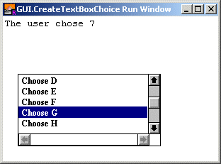

GUI.CreateTextBoxChoice (x, y, width, height : int, border, fontID : int, actionProc : procedure x (line : int)) : int
Creates a text box that can be used for selecting individual items and returns the text box's widget ID.
A text box is a box used for displaying text. By using GUI.AddLine to add lines of text, the program can then waitfor the user to double click on lines in the text box. The linehighlights when the user clicks the line once, and calls the actionprocedure when the user clicks the highlighted line a second time.Like a text box, the text box choice has scroll bars that activate when text appears outside the border of the text box. The user cannot directly edit or modify the text in the text box choice.
The x and y parameters specify the lower-left corner of the area in which the text will be drawn. The width and height parameters specify the width and height of the text drawing area The text box border is just outside the text drawing area. Because of this, GUI.GetX and GUI.GetY will return a value slightly smaller than x and y and GUI.GetWidth and GUI.GetHeight will return values slightly larger than width and height.
For GUI.CreateTextBox, the border around the text box is always a line. For GUI.CreateTextBoxFull, the type of border is specified by the border parameter. The border parameter is one of 0, GUI.LINE, GUI.INDENT, or GUI.EXDENT. A border of 0 is the default and is the same as GUI.LINE. GUI.INDENT and GUI.EXDENT only display properly if the background colour has been set to gray using GUI.SetBackgroundColor. GUI.INDENT makes the text box appear indented or recessed. GUI.EXDENT makes the text box appear to stand out from the window. The fontID parameter specifies the font ID of the font to be used in the text box. The font ID is received from a Font.New call. Do not call Font.Free for this font ID until the label has been disposed of by calling GUI.Dispose.
By using the fontID parameter, text boxes can have any size or typeface.

A text box choice after a user double clicked a line.
The following program displays the contents of a file in a text box.
import GUI
procedure ChoseLine (line : int)
location (1, 1)
put "The user chose ", line
end ChoseLine
var x : int := GUI.CreateTextBoxChoice (20, 20, 200, 100, 0, 0, ChoseLine)
GUI.AddLine (x, "Choose A")
GUI.AddLine (x, "Choose B")
GUI.AddLine (x, "Choose C")
GUI.AddLine (x, "Choose D")
GUI.AddLine (x, "Choose E")
GUI.AddLine (x, "Choose F")
GUI.AddLine (x, "Choose G")
GUI.AddLine (x, "Choose H")
GUI.AddLine (x, "Choose I")
GUI.AddLine (x, "Choose J")
loop
exit when GUI.ProcessEvent
end loop
When GUI.CreateTextBox or GUI.CreateTextBoxFull is called, the newly created text box choice will be displayed immediately unless GUI.DisplayWhenCreated has been called with the display parameter set to false.
The following GUI subprograms can be called with a text box as the widgetID parameter:
GUI.Show, GUI.Hide, GUI.Dispose,GUI.GetX, GUI.GetY, GUI.GetWidth,GUI.GetHeight, GUI.SetPosition,GUI.SetSize, GUI.SetPositionAndSize,GUI.AddLine, GUI.AddText, GUI.ClearText, GUI.SetTopLine, GUI.SetScrollOnAdd
Exported qualified.
This means that you can only call the function by calling GUI.CreateTextBoxChoice, not by calling CreateTextBoxChoice.
GUI.AddLine for adding text to the text box.See also GUI.SetTopLineto set the top line of text in the text box.See also GUI.SetScrollOnAddto set stop the text box from scrolling when text is added to the text box.See also GUI.ClearText for clearing the text box.